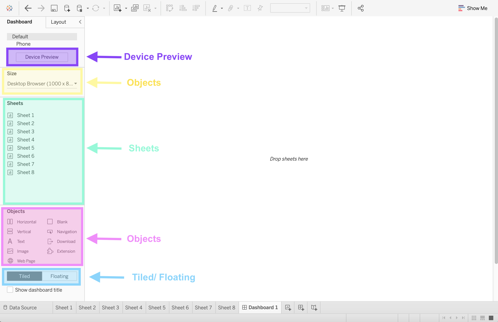
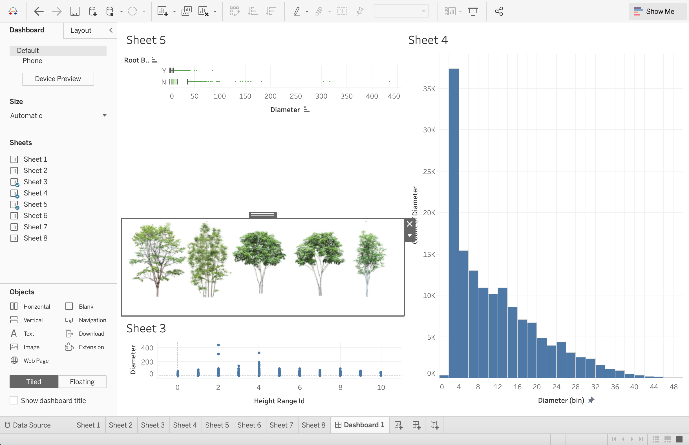
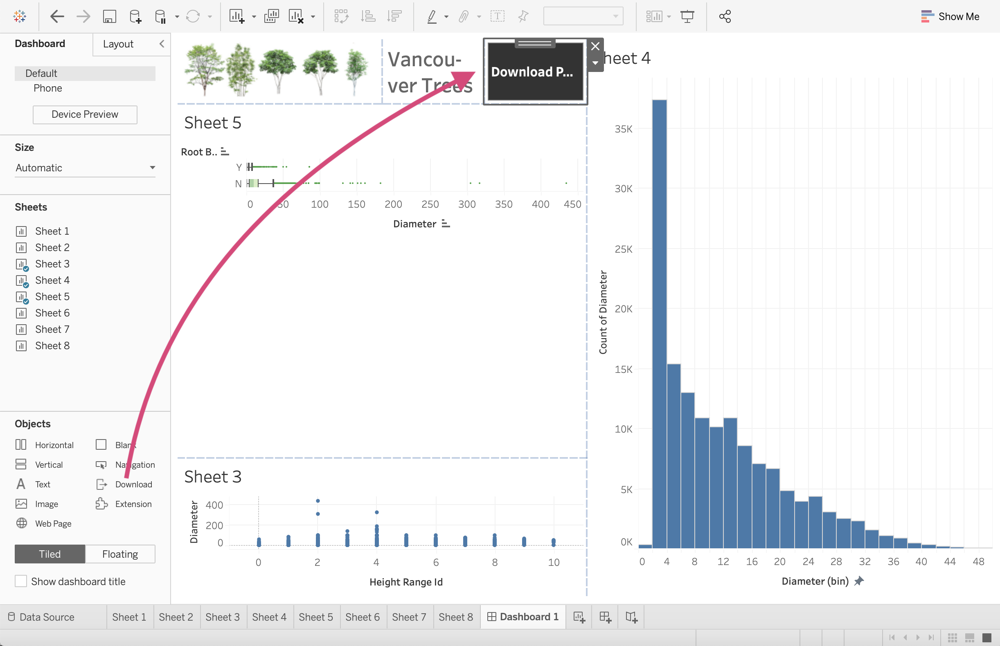
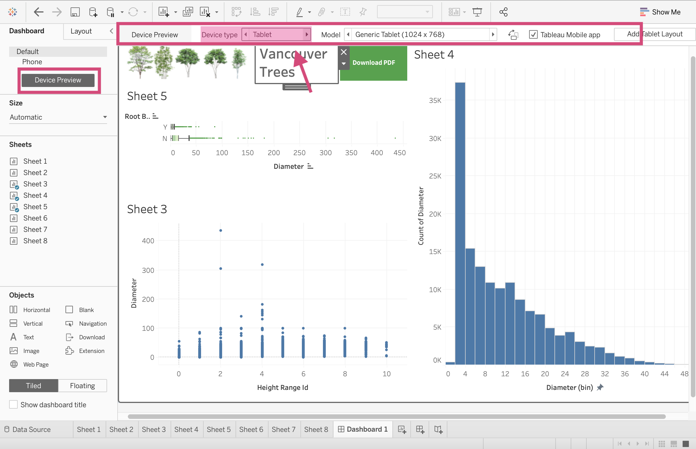
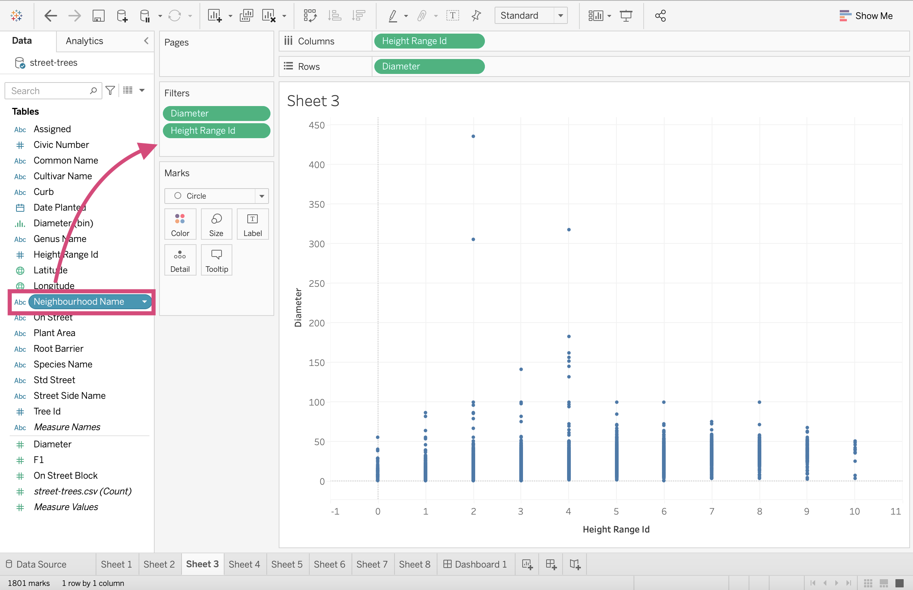
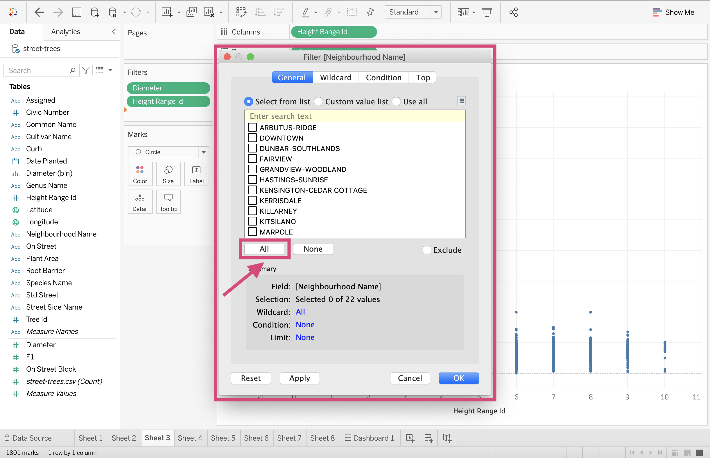
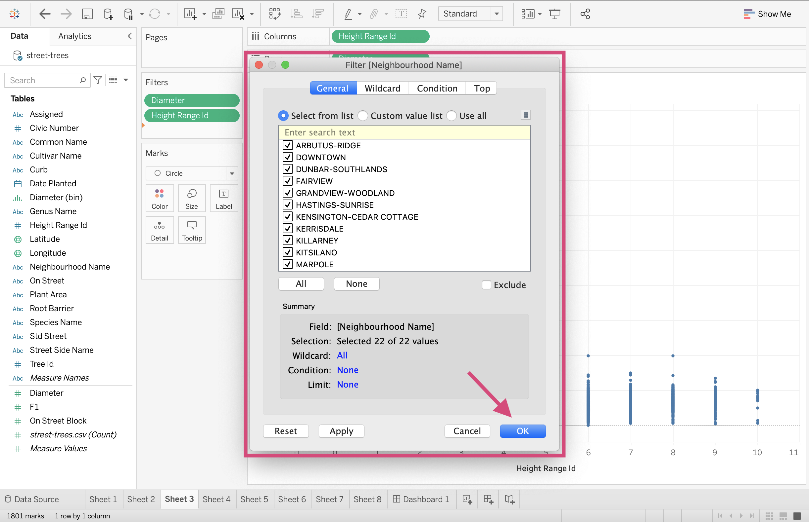
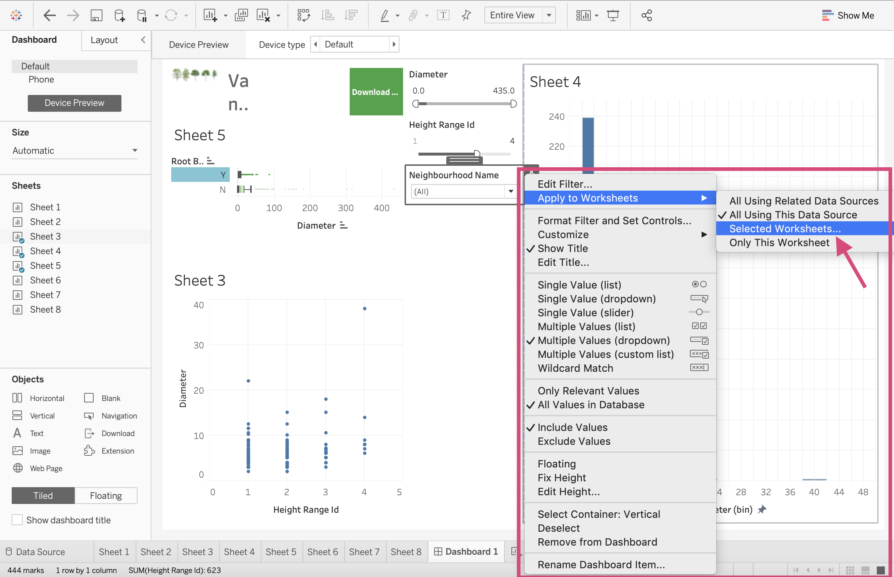
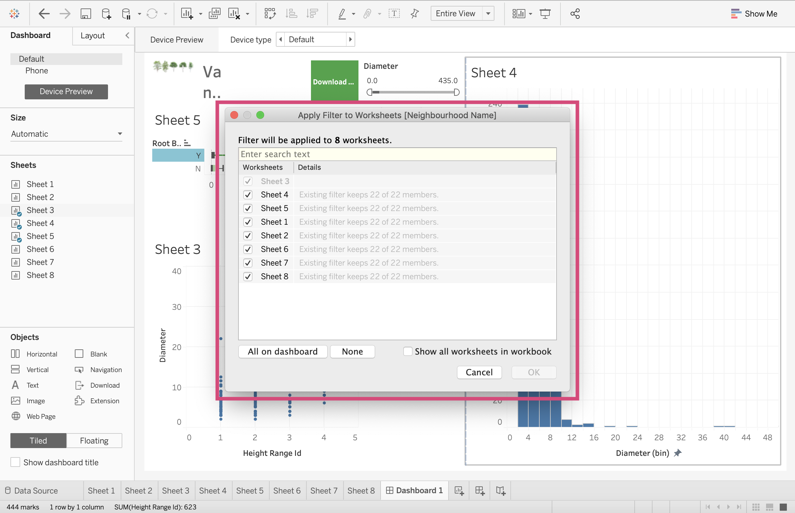
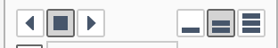

3. Dashboards, EDA and Choropleths¶
3.1. Dashboards¶
The moment we’ve all been waiting for! This is where we can take our visualizations from our worksheets, combine them into 1 page (or multiple) and add filters making them dynamic in nature.
Let’s begin by creating a new Dashboard.
1. Click on the Dashboard icon at the bottom of your workspace.


Here we can display images, worksheets, filters and even website pages.
3.1.1. Workspace¶
Here we can examine the buttons are tools we will need to create our dashboards.
Size
It’s important that you select the size of the screen your dashboard is expected to be displayed on. The options are:
Fixed: The dashboard remains the same size no matter the screen used to display it. If the dashboard is bigger than the designated window, the dashboard will be scrollable.
Range: The dashboard scales between a minimum and a maximum size that you specify.
Automatic - This is what I generally suggest since the dashboard will automatically resize to fit the screen it’s displayed on. When using Automatic I also firmly suggest using a Tiled dashboard layout (explained below).
Sheets
Here is where we can select the plots we made on the worksheets and bring them together collectively on a dashboard.
All we have to do is drag the sheet to the visualization space.

Tiled/Floating
3.1.1.1. Tiled example¶
You’ll notice that when we dragged these sheets they snapped into a position. This is creating tiles. I only recommend using this layout method when using the Automatic sizing option.
Tip!
When you drag sheets into the Dashboard, you can have them displayed in the standard view, or if you want the visualization to take up more space in the boundaries, you can:
1. Click on the desired plot.
2. Select the More Options icon.
3. Under the Fit option, you can select “Entire View”

And we can see the difference using our boxplot as an example.

3.1.1.2. Floating example¶
If we instead used the floating option, we could place the plot anywhere but it can prove problematic when the screen size is fixed.
Objects
We are not restricted to only putting worksheets and graphs on our dashboard. We can also add images, webpages embedded in the sheets as well as Text boxes, downloading and navigation button options.
3.1.1.3. images¶
We can place images in our dashboards just as easily as we can sheets.
Step by Step Instructions
1. We first drag the Image option where we wish to place it in the dashboard.

2. We then must select our desired images from our file directory, here I’m using the trees.png file which I’ve also made available on my Google drive here.
3. I select the Fit Image option so that the image is fixed to the dimension of the dashboard tile.

And there you have it! 
3.1.1.4. webpage¶
We can even embed complete working websites in our dashboards.
Step by Step Instructions
1. We drag the Web Page option to the dashboard and it will result in a popup asking for the desired page.

And it’s as simple as that! We have the website active now!
3.1.1.5. Text¶
Adding text for titles or explanations (I’ve even added axis titles using this option when in a pinch) works the same as images and webpages. We can drag and then format our text.
3.1.1.6. Download¶
To create an option to download a static copy of your dashboard, you can add a button allowing the viewer to do so.
Step by Step Instructions
1. Like the other object, we drag the Download icon to the dashboard. 
2. To format it, we need to double click and select the desired export or button type and format the font.

3. We can also adjust the background colour.


3.1.1.7. Navigation¶
There may be times where on your dashboard you’d like to navigate to either a different dashboard or perhaps dive deeper into a worksheet. I needed this for my own dashboards when I had the list of customers pop up with certain filters and I wanted to navigate back to the main dashboard.
Step by Step Instructions
1.This can be down by dragging the Navigation icon onto the dashboard.

2. We don’t need to do this for our dashboard, but you can then select where this button will navigate you to.

3.1.1.8. Extensions¶
For certain additional actions and features, we can also add extensions that other people have made and shared publicly.
We will discuss this in the 4th lesson if we have time.
Device Preview
You can check and preview what your dashboard will look for other devices by clicking this Device Preview and scrolling through the options like Desktop, Tablet and Phone



3.1.2. Filtering¶
Here is where the fun starts! Since Tableau is an excellent tool to use for dynamic plots, let’s go ahead and see why first hand.
Step by Step Instructions
1. Click on the sheet you wish to filter. On the right side of the plot, you’ll see a More Options button.

This will produce a dropdown where we want to select a field to filter on. Under Filters we can then select the columns displayed. These are currently the ones we are using in the plot already. We will show you how to filter on additional columns momentarily. For now, let’s select Diameter.
2. Selecting the field desired will then produce a filter!
3. Let’s add another. Let’s add the Height Range Id as a filter too.


I’m going to move the plot so that we can focus on the filters and see all the popups here.

4. If we click on the filter we can then see a More Options icon.

This is where we can see all the filter style options.

Since both of these fields as measures, we can filter in the following ways:
Range of Values/Dates: This means you can filter the data to include or exclude more values. You can pick the minimum and maximum values.
At Least/Starting Date: This has a fixed maximum value and an open-ended minimum value that the user chooses.
At Most/Ending Date: This has a fixed minimum value with an open-ended maximum value that the user chooses.
For periods there, there are 2 more called Relative to Now and Browse periods where the values must be continuous.
5. In order to filter the graphs by other columns, we must add it to the Filters card on the Worksheet page of the plot.
Locate yourself to the appropriate sheet using the tab at the bottom. Select the column you wish to filter the plot on and drag it to the Filters card. Here we are going to drag the Neighbourhood Name column.
This will create a pop-up where we can select the categories and values we wish to include. I will be selecting All

6. We can then return to our dashboard, click on the plot and see that Neighbourhood Name has need added to the choice of filters.

This produces a list of all the neighbourhoods now.

7. Clicking on this filter and selecting the More Option icon, you’ll see all the different filtering styles.

Neighbourhood Name is a Dimension. Dimensions have the following possible filtering styles (Source: help.tableau.com):
Single Value (List): A full list of all the possible values of the filter as radio buttons but only 1 can be selected at a time.
Multiple Values (List): Shows all the values in the filter as a list of checkboxes where multiple values can be selected.
Single Value (Dropdown): Displays the values of the filter in a drop-down list where only a single value can be selected at a time.
Multiple Values(Dropdown): Displays the values of the filter in a drop-down list where multiple values can be selected.
Single Value (Slider): Displays the values of the filter along a slider. Only a single value can be selected at a time. This option is useful for dimensions that have an implicit order such as dates.
Multiple Values (Custom List): Displays a text box where you can type a few characters and search for the value.
Wildcard Match: Displays a text box where you can type a few characters. All values that match those characters are automatically selected.
We are going to select the Multiple Values Dropdown
3.1.3. Filter All Sheets using Same Data Source¶
One of the great things about Tableau is now we can take the filter we made for one of our plots and use it for some of the other plots in our dashboard.
If we are using multiple sources that share columns, we can program our filter so that it’s applied to multiple worksheets.
Selecting All using Related Data Sources and now all the plots that have this field name will work with it.
In our case, we can use the All Using this Data Source option which will now filter all the worksheets using the street-trees.csv data file.
This is done by clicking the desired filter, and selecting the More options icon.
Under the dropdown menu, we can Apply to Worksheets and select All Using this Data Source.
Now when we use this filter and select no neighbourhoods (None), none of our graphs show up! This filter is now working for all our graphs.

If we change the filter to Kitsilano, all our graphs are filtered accordingly now!

If we only wanted this filter to only affect a few of the graphs, we can select the Selected Worksheets and then chose the worksheets we wish to depend on the filter.

3.1.4. Plots as Filters¶
Tableau also gives the option of using a graph itself as a filter. Here we will use our boxplot as a filter for the other two.
We can do this in 2 ways.
By using the funnel icon when we click the plot
Selecting it from the More Options menu.

Now when we click on the Boxplot with Root Barrier = Y, our plots filter accordingly.
3.2. Publishing Dashboards¶
You can either publish your dashboard on your company’s Tableau server or using Tableau online.
I don’t have access to either of these so it makes it difficult to demonstrate this to you.
I can link you to this easy to follow step-by-step guide that walks you through the steps to publish your work.
You’ll also be able to publish your work on Tableau Public (If the data you are using is not sensitive and you are allowed to do so) which is where we saw some of the other dashboard examples.
Note that publishing to Tableau public is only recommended for personal projects using open source data.
3.3. Quick Quiz¶
True or False: Dimensions have more filtering style options than Measures.
If we want to filter on a field/column that isn’t used in the plot where must we make this adjustment, on the dashboard or on the plot’s corresponding worksheet?
Which of the following is not an option for Device Preview: Phone, Desktop, Embedded webpage, Tablet.
Which of the following file type is not an option to export your dashboard as with a Download object; PowerPoint, Crosstab, image, Word document?
Which layout type is recommended when choosing Automatic as a Dashboard size?
True or False: You can only have 1 dashboard tab for each file.
3.4. EDA¶
Exploring your data in Tableau is not quite as intuitive as hoped and it’s likely better to use Tableau Prep for this.
3.4.1. Tableau Prep¶
Tableau Prep is not covered in this curriculum and I, unfortunately, have restricted access to Tableau Prep but I’m going to give you some minimal notes and screenshots that should help with EDA (Unfortunately due to my restriction I cannot demonstrate this live).
Step by Step Instructions
1. Open Tableau Prep. When the application open’s you should be greeted to this home screen.
2. Click on the Connect to Data button at the top of your screen.
3. Select the appropriate data source. For any .csv files, connect using Text file. Since we are connecting to street-trees.csv, we will be using that option.
Once you select your appropriate file in your document, Tableau Prep will bring in your data.
You should be able to see all the column names and some sample values that are contained in each.
4. Click on the ⊕ icon on the right of the data source.
5. This will produce a drop-down menu where you’ll want to + Add Step

6. Tableau Prep will then automatically create distributions for each column in your data.
Tableau Prep can then be used to create new columns, and delete observations. Deleting observations cannot “per say” be done in Tableau but we can exclude them and/or filter them.
I can also direct you to this wonderful article by Sergei Medvedev which gives some straightforward instructions on how Tableau Prep can be used for EDA.
In addition, tableau.com also is a great resource, specifically this article which teaches you how to clean your data including how to rename values.
3.4.2. Describe¶
Tableau Desktop does offer another small method to learn a little bit about your data.
If you locate yourself to the Data Source, you’ll be able to minimally explore your column fields.
Here let’s look at a column that is a discrete Dimension - in our case Genus Name. Click to obtain the dropdown menu and select Describe….
This will give a little information about the column including if any null values are present. It will also tell you all the possible unique values the column has.
Let’s try it now for a continuous Measure - `Diameter. Bring the dropdown menu up by clicking and then again select Describe….
Here you may need to load the domain.
After loading it will give you the maximum and minimum values of the columns.
3.4.3. Pages¶
Pages are useful when you want to get many plots for multiple categories in a field.
We could either use a colour field…
So, for example let’s take our line plot which shows the number of trees planted each year. Let’s see this for each tree genus now.
If we drag Genus Name to the colour channel, we get an expected warning telling us they only recommend fields with up to 20 unique values, but we have 97!
If we agree to it, our final plot is… well messy, confusing and just hard to read.
A better solution would be to make a plot for each Genus type. Now instead of actually making a plot for every single categorical value (since we are lazy after all), we can use the Pages card.
Step by Step Instructions
1. Let’s start with our line plot as a base (a continuous YEAR(Date Planted) Measure and CNT(Tree Id) on the Columns and Rows shelves respectively).
2.\ All you need to do is drag your desired field to the Pages card.
Tableau explains pages as a “shelf [that] lets you break a view into a series of pages so you can better analyze how a specific field affects the rest of the data in a view”.
Now we can scroll through all the trees genus and see the respective line graph for each without having to make all 97 of them!
You can either select specific category names with the dropdown…
… scroll through all the categories…
…or use the controls to watch a slide show of all the plots.
Note
The icons on the right indicate how fast to transition to the next category’s plot. 1 bar being the slowest and 3 bars being the fastest.
If we wanted all the plots together, we could have dragged Genus Name to the Rows Shelf.
This is called Faceting.
3.5. Quick Additions - Lines and predictions¶
Tableau is quick convenient and one of the luxuries it provides is that it gives us the ability to add additional information to our plots in some form of line or curve.
Lines can be added to plots to highlight a specific trend your data might be showing.
To get to this area, click on the Analytics tab in the left toolbar.
There are many different kinds of lines you can add…
3.5.1. Summary Lines¶
Summarize lines: They can either show a summary statistic line or constant value for either the x or the y axis.
just drag and drop to the correct line you wish to add.
The drop area will specify if you want to add it to the specific field ( x-axis or y-axis).
3.5.2. Trend lines¶
Trend lines will add a line of best fit to your plot. You can choose between Linear, Logarithmic, Exponential, Polynomial, or Power model types.
See here for more information on how these are decided.
Again, all you need to do is select the Trend Line option and drag it to the visualization area.
You can select one of the options you think suits your data best and it will display it on your plot.
If you click or hover over the line, it will give you more information on how it was calculated.
3.5.3. Forecasting¶
Warning
Forecasting is a bit more difficult to use and I say this because we don’t know as well what is happening behind the calculations. I don’t usually suggest using this feature as it’s not quite as reliable as other forecasting models where you have much more control and transparency, and much fewer restrictions.
That being said, they can be helpful in a pinch for some rough calculations if needed.
Forecasting definitely should be used if you have a bit more knowledge as you will need to know how you wish your trend and seasonality to be predicted - in an additive or multiplicative manner.
Let’s say we wanted to predict how many trees will be planted in 2020 (I realize it’s past 2020 so let’s instead predict how many trees would have been planted in the 2020 dataset).
Step by Step Instructions
1. From the left side of the Analytics tab, drag the Forecast option into the visualization view, you will then be prompted to select Forecast.
This will automatically change the colour of your plot and you’ll see 2 colours, one for the actual values and one for the estimate.
If you hover over 2020, you can now see that the model predicts 1094 trees planted.
2. You can right-click and under the Forecast option we can click Forecast Options… to edit this option.
3. We can predict in different ways and aggregate by years, quarters, months, etc.
4. Under Forecast Model we can select Custom.
5. This will prompt the different ways you can predict the trend and seasonality of the model - Additive or Multiplicative. Now the process behind this is a bit statistic heavy and I don’t have enough time to explain it all but I can provide the following ressource that may explain things further.
Generally speaking, Tableau explains such as followed:
Additive model: Where the contributions of the model components are summed, whereas a multiplicative model is one in which at least some component contributions are multiplied.
Multiplicative models: Usually improves forecast quality for data where the trend or seasonality is affected by the level (magnitude) of the data.
6. We can also change the uncertainty interval (known as the prediction interval) where decreasing our certainty will decrease the boundaries around our prediction…
7. …and increasing our certainty will increase the boundaries around our prediction.
3.5.4. Clustering¶
Warning
Just like forecasting, clustering has a lot of behind-the-scenes math going on and it’s a good idea to read up on how the clustering algorithm works.
Tableau Clustering uses an algorithm called K-means.
See also
Generally speaking, explaining this algorithm can take a full lecture and, to save time, I recommend reading about it here or watch the amazing lecture by my supervisor Mike Gelbart who teaches Machine Learning at the University of British Columbia. You can find the lecture notes here.
Let’s return to our scatterplot (that’s not entirely a true scatterplot but it’s acting as one).
One of the things you’ll notice is that the Cluster option is not available.
Step by Step Instructions
1. The first thing we must do is to turn off the aggregation measures so that we have the ability to cluster! We can do this by going to the top toolbar (the very top one) and under the Analysis tab, deselect the Aggregate Measures.
This will trigger the Cluster option under Model to become an option now.
2. Let’s now click and drag Cluster into the visualization pane and select Cluster.
This will automatically produce clusters determined by Tableau. (Tableau uses the Calinski-Harabasz criterion to determine the default number of clusters - see more here)
3. We can change the number of clusters used by clicking the Clusters* field that has been added in the Marks card and selecting Edit clusters….
4. This will produce a popup where we can then decide for ourselves how many clusters we want.
3.6. Multiple Data Sources¶
Tableau is quite handy because we are not limited to a single data source for our dashboards and worksheets.
We can connect multiple data sources and use them independently or by blending them.
Let’s say you have 2 different data sources and there is at least 1 common field between them. We can connect them and “join” them so that a column from 1 source can be used for the same worksheet as columns from another source.
3.6.1. Relationships¶
The default way to connect data sources is using relationships.
Relationships are a flexible way to combine data for multi-table analysis in Tableau. They make your data source easier to define, change, and reuse instead of merging your data into a single source.
Tableau makes this very easy since You only need to select matching fields to define a relationship.
Warning
You’ll need to make sure that the values in each column field match or at least overlap!
Let’s try adding the second data set called local-area-boundary.geojson located in the google drive at this link.
These data are in a geojson file that we will use to make a choropleth map shortly.
Step by Step Instructions
1. First, let’s add a new data source. We can do this in 2 ways; either clicking the icon at the top or clicking the Data Source tab at the bottom where we create new worksheets and dashboards.
2. Find your file and connect as you would with any data source.
This will load in our data!
If we click on the icon shown, it will produce a dropdown and show us our 2 data sources; street-trees and local-area-boundary.
3. If we relocate ourselves to a new sheet, we will then see 2 data source options under the data tab in the menu on the left of our workspace.
4. If we look at our new data source, you’ll recognize that the Name column contains the same values as our Neighbourhood Name field in our street-trees data, so let’s connect the two sources by this field!
5. To do so we need to click on the Data tab in the upmost menu bar and select Edit Blend Relationships…
6. We need to customize our relationship so we click Custom from the popup that is generated.
7. We then select the Neighbourhood Name field from the first data source and the Name field from the second followed by OK.
8. We confirm our Blend Relationship by clicking OK.
9. One thing you should notice is next to the field that we are using as a link between the data sources there is a red chain icon.
Now let’s try and use 2 data sources together. Here I’m going to try to use Curb from Street-trees and Name from local-area-boundary.
What’s going on though? It’s saying Null for Curb values!
10. If we look at the 2 fields separately, you’ll notice that the Neighbourhood Name column has values that are all in capitals letters and our Name column from our local-area-boundary data have values in a title-case style.
We can change this by engineering a new column from the Name column of local-area-boundary where all the values are capitals!
3.6.1.1. Making our first Calculation¶
We can engineer a new field/column using the calculation option!
Important
1. Let’s first click on the Name field from the local-area-boundary data source and under the menu option Create, select Calculated Field…
2. We can edit the name of this calculation to Neighbourhood Upper and then using the UPPER() function convert the [Name] column within it, to convert its values to uppercase.
Note that in Tableau, column fields are identified by the name of the field in square brackets ([]).
3. Tableau will then produce the new field with the name we specified and if we look at it, all the values will be in uppercase, just like we asked.
Let’s continue to join our sources but this time we will use the correct Neighbourhood Upper column instead of Name for the local-area-boundary data source.
11. Click on the Data tab in the upper toolbar and select Edit Blend Relationships.. like we did before.
12. Edit the existing connection.
17. Here we can select Neighbourhood Upper instead of Name for the secondary data source and click OK.

18. We once again confirm our links between data sources.
19. Now when we try to combine the Curb column from the street-trees data source with the Neighbourhood Upper column from the local-area-boundary data source, we can see that they are linked and no longer produce a null row like before!
3.6.2. Joins¶
Most people who work with data will be familiar with the need to wrangle the data together and connect them using something called a join. Generally speaking, relationships are much better and convenient to use and most of the time we will not need to use a hard joining method.
Tableau also suggests that if you need to do multiple joins while cleaning up column names and data types, it may be better to use Tableau Prep Builder.
That all being said here are some ways you can join your data if you really need to.
3.6.2.1. Types of joins¶
| Join Type | Explanation |
Inner
| Using an inner join to combine tables will result in a data source that only contains rows that are present in both tables. Any rows that are present in a single table gets thrown out. |
Left
| Joining tables using a left join will create a table that contains all rows from the left table and corresponding matches from the right table. Any rows only present in the right table are thrown out. Any rows that are present in the left table and not in the right will produce NA values for any corresponding columns obtain from the right column. |
Right
| This produces similar results to the Left join, however this time any rows not present in the right table now are thrown out and all the rows from the right table are kept. |
Full outer
| A full outer join will keep all rows no matter if they match or not from both tables. When a row from either table doesn't have a match with the other table, NA values will be displayed. |
| Union
| Unions are used to stack data on top of each other. This works best if the columns in both tables are identical. See Union Your Data for more information regarding this. |


{kind=link}
{kind=link}
{kind=link}
{kind=link}
{kind=link}
{kind=link}
{kind=link}
{kind=link}
{kind=link}
{kind=link}
{kind=link}
{kind=link}
{kind=link}
{kind=link}
{kind=link}
{kind=link}
{kind=link}
{kind=link}
{kind=link}
{kind=link}
{kind=link}
{kind=link}
{kind=link}
{kind=link}
{kind=link}
{kind=link}
{kind=link}
{kind=link}
{kind=link}
{kind=link}
{kind=link}
{kind=link}
{kind=link}
{kind=link}
{kind=link}
{kind=link}
{kind=link}
{kind=link}
{kind=link}
{kind=link}
{kind=link}
{kind=link}
{kind=link}
{kind=link}
{kind=link}
{kind=link}
{kind=link}
{kind=link}
{kind=link}
{kind=link}
{kind=link}
{kind=link}
{kind=link}
{kind=link}
{kind=link}
{kind=link}
{kind=link}
{kind=link}
{kind=link}
{kind=link}
{kind=link}
{kind=link}
{kind=link}
{kind=link}
{kind=link}
{kind=link}
{kind=link}
{kind=link}
{kind=link}
{kind=link}
{kind=link}
{kind=link}
{kind=link}
{kind=link}
{kind=link}
{kind=link}
{kind=link}
{kind=link}
{kind=link}
{kind=link}
{kind=link}
{kind=link}
{kind=link}
{kind=link}
{kind=link}
{kind=link}
{kind=link}
{kind=link}
Source: This table is adapted from the one available at help.tableau.com
3.6.2.2. Creating a Join¶
Step by Step Instructions
1. Let’s add a new data source. Click the icon at the top toolbar that specifies New Data Source.
{kind=link}
2. Let’s first bring in our street-trees.csv data file.
{kind=link}
3. It’s a good idea to name this something to distinguish it from the other sources so let’s call it street-trees-joined.

4. Time to bring in our local-area-boundary data source which is a Spatial file.
{kind=link}
{kind=link}
5. Now that we have both data sources, let’s double click on the street trees icon in the middle of our workspace.
{kind=link}
This will change the view to what it looks like in the image below.
{kind=link}
6. First clicking on the local-area-boundary data source, drag the table under Files to a space under the street-trees rectangle.
{kind=link}
7. This will generate a popup where we need to connect the 2 tables. For the left table, we use Neighbourhood Name…
{kind=link}
…And for the right we can create Join Calculation.
{kind=link}
8. Just like we did for relationships we convert the field to UPPER by placing the Name field in square brackets within UPPER()`.
{kind=link}
This will by default create an inner join!
{kind=link}
9. If we update it with the Update Now button, we will see all of the columns from both tables.
{kind=link}
To change the join type, we can click the join icon and then change it by clicking the icon of the desired join we want. Here we are selecting a full join.
{kind=link}
Now the join icon has changed!

{kind=link}
3.7. Quick Quiz¶
True or False: Using Describe in Tableau will tell us summary statistics about our column like average and mean.
What is the name of the Card that we use to make multiple plots for different values of a field?
Which tab do we need to navigate to, to create reference, summary and trend lines?
Which of the following is not an option for a trend line; Linear, Normal, Logarithmic, Exponential, Polynomial, or Power?
True or False: When we use the forecast feature, we will allocate the colour channel to show the Actual vs Estimated values.
Which algorithm does Tableau Clustering use?
What should be done before we cluster to make sure that we can drag the Cluster icon to the visualization pane?
Why default what does Tableau use to connect your data sources: Joins, Relationships, Glue, Connections?
What “join” type is used to stack data on top of each other?
What join type only keeps rows present in both tables?
3.8. Making a Choropleth Map¶
Let’s try to create another map but this time let’s try and answer how many trees there are in each Vancouver neighbourhood. We can visualize this by using a choropleth map.
Step by Step Instructions
1. Locate yourself to the spatial dataset that we connected to the Data Source local-area-boundary.geojson.
{kind=link}
2. Drag the Geometry Dimension to the Details icon in our Marks card.

Right away, a map with all our neighbourhoods will be visible. Tableau is using Latitude and Longitude fields created from this geojson file to create a map this time.
{kind=link}
3. Now let’s use our street-trees data to count the number of trees in each neighbourhood. From the Data tab, navigate yourself to the street-trees data source.
{kind=link}
4. Drag the Tree Id field to the colour icon in the Marks card so that we can use a colour channel to communicate the number of trees.
{kind=link}
Warning
This may generate a popup winder informing us that we need to add a relationship to our primary data source.

We can blend the data sources now by clicking the chains next to the Neighbourhood Name field so that they turn red and now link the 2 sources.
{kind=link}
5. Once the 2 sources are blended and there is a red chain icon next to our Neighbourhood Name field, we can convert the Tree Id field from our colour channel and convert it to a Count Measure by clicking it and selecting Measure followed by Count from the dropdown menu.
{kind=link}
We are still not quite at a choropleth map; we need one more thing!

6. Drag the Neighbourhood Name field from the primary source (the source we did not use the latitude and longitude fiends to make the map from) to the Details field in the Marks card.

Ahhh! How we have a choropleth map!

7. If when we hover over the map, it shows us the number of trees in each neighbourhood!

Easy Peasy right?!